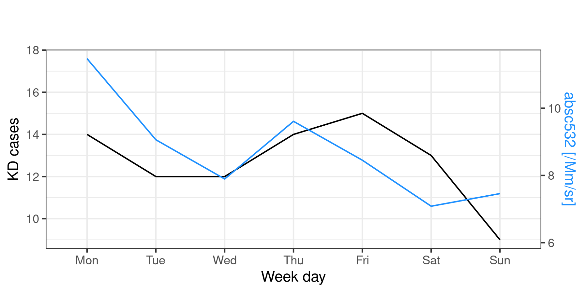
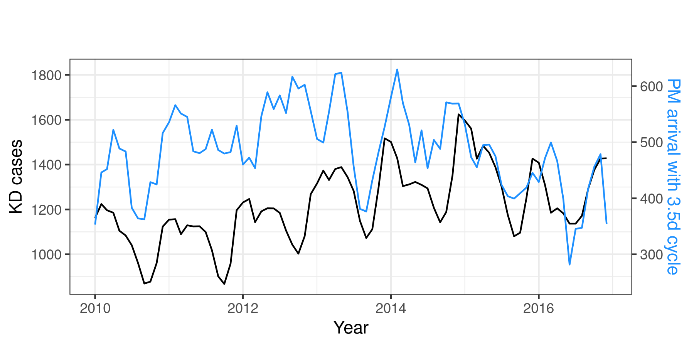
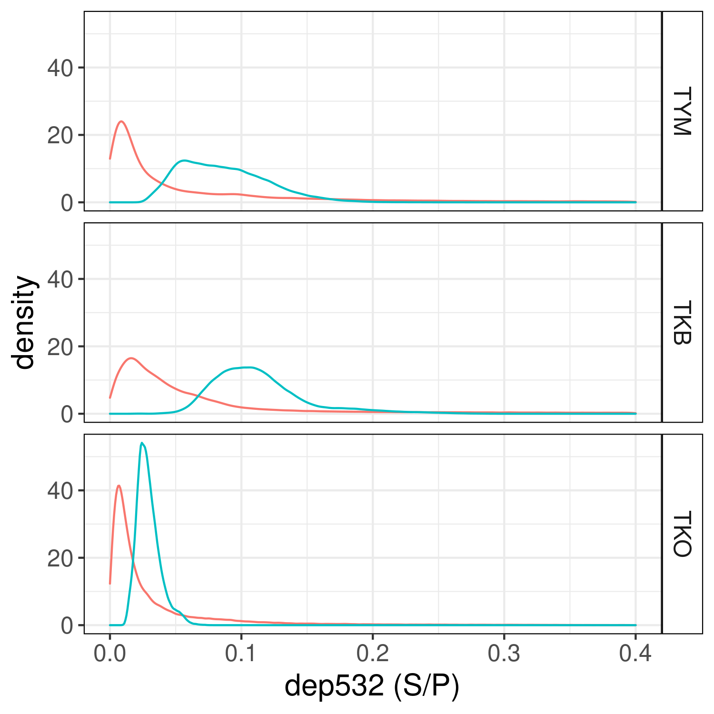

Sub weekly cycle Figures
Contents
Sub weekly cycle Figures¶
{contents}
:local:
:depth: 2
Preamble¶
Load and install packages¶
#Function for portable code
insAndLoad <- function(packages) {
k <- packages[!(packages %in% installed.packages()[,"Package"])];
if(length(k))
{install.packages(k, repos='https://cran.rstudio.com/');}
for(package_name in packages)
{library(package_name,character.only=TRUE, quietly = TRUE);}
}
#Load or/and install needed packages
insAndLoad(c("progress","Hmisc","plot3D","purrr",
"ggplot2", "tidyr", "dplyr", "readr", "tibble",
"zoo", "ggsci", "stringr","grid", "gridExtra",
"reprex", "lubridate","caTools","TeachingDemos",
"reshape2","caret","ggpubr"))
Figure 4E¶
options(repr.plot.width = 6, repr.plot.height = 3, repr.plot.res=300)
absc532_KD_Surf_6km <- readRDS("data/KD_absc532_mean_S-6km_daily.rds")
data_gg <- absc532_KD_Surf_6km %>%
# Add a column with all the years from the time series daily index
mutate(Year = year(Dates),
Month = month(Dates)) %>%
# Group by the month
#group_by(Month = month(Dates), Year) %>%
group_by(WeekDay = wday(Dates, week_start=1, label = TRUE)) %>%
# Aggregate data monthly: mean, max or min?
summarize_at(vars("absc532_TKO","KD_TKO"), list(~mean(.,na.rm = TRUE),
~max(.,na.rm = TRUE),
~min(.,na.rm = TRUE)))
max_ld <- max(data_gg$KD_TKO_max)+1
min_ld <- min(data_gg$KD_TKO_max)
max_kd <- max(data_gg$absc532_TKO_max)*1E+6 - 1
min_kd <- min(data_gg$absc532_TKO_max)*1E+6 - 1
# plot coefficient
ggCoeff_weekly <- (max_kd-min_kd)/(max_ld-min_ld)
intercept <- max_kd - (max_ld*ggCoeff_weekly)
ggplot(data_gg) +
aes(x=WeekDay) +
geom_line(aes(y= KD_TKO_max), group=1) +
geom_line( aes(y= (absc532_TKO_max*1E+6 - intercept)/ggCoeff_weekly), color="dodgerblue", group=1) +
scale_y_continuous(sec.axis = sec_axis(trans=~.*ggCoeff_weekly + intercept, #trans_sec , #* ggCoeff_weekly,
name="absc532 [/Mm/sr]")) +
theme_bw() +
labs(x='Week day',
y='KD cases',
title='',
subtitle=paste('',sep='\n'),
color='Variable') +
theme(plot.subtitle = element_text(color = "#605e5e", size = 9),
plot.title = element_text(size=12),
axis.title.y.right = element_text(color = "dodgerblue"),
legend.position="bottom")

Figure 5¶
Figure 5A¶
options(repr.plot.width = 6, repr.plot.height = 3, repr.plot.res=300)
Corr_tb_TKO_m <- tibble(Corr = Corr_tw84_c[[2]],
Dates = as.Date( names( Corr_tw84_c[[2]]) ) ) %>%
# Select correlations over 0.5
#filter(Corr >= 0.45 ) %>%
filter(Corr >= 0 ) %>%
group_by(Months=floor_date(Dates, "month")) %>%
summarise(absc532Corr=sum(!is.na(Corr)))%>%
mutate(absc532Corr = runmean(x = absc532Corr, k = 3 , alg = "C", endrule = "mean",align = "center"))
#summarise(absc532Corr=mean(Corr, na.rm=TRUE))
KD_file_m <- read_csv("../data/KD_1970_2016_Albert.csv", col_types = cols(.default = "c")) %>%
mutate(Dates=as.Date(Dates)) %>%
mutate(Japan = as.numeric(Japan)) %>%
.[.$Dates %in% seq(as.Date("2010-01-01"),as.Date("2016-12-31"),by="day"),] %>%
group_by(Months=floor_date(Dates, "month")) %>%
summarise(KDcases=sum(Japan, na.rm=TRUE)) %>%
mutate(KDcases = runmean(x = KDcases, k = 3 , alg = "C", endrule = "mean",align = "center"))
KD_2010_16_gg <- right_join(Corr_tb_TKO_m, KD_file_m,by = "Months")
ggKDCorrCoeff_m <- 2/5 #16/130
ggKDCorrInter_m <- -100 #-1120/13
ggplot(KD_2010_16_gg) +
aes(x=Months) +
geom_line(aes(y= KDcases), group=1) +
geom_line( aes(y= (absc532Corr-ggKDCorrInter_m)/ggKDCorrCoeff_m, color="dodgerblue", group=1),
color="dodgerblue") +
scale_y_continuous(sec.axis = sec_axis(trans=~.*ggKDCorrCoeff_m+ ggKDCorrInter_m, #trans_sec , #* ggCoeff_weekly,
name="PM arrival with 3.5d cycle")) +
theme_bw() +
labs(x='Year',
y='KD cases',
title='',
subtitle=paste('',sep='\n'),
color='Variable') +
theme(plot.subtitle = element_text(color = "#605e5e", size = 9),
plot.title = element_text(size=12),
axis.title.y.right = element_text(color = "dodgerblue"),
legend.position="none"
)

Figure 5B¶
options(repr.plot.width = 8, repr.plot.height = 8, repr.plot.res=300)
library(IRdisplay)
Dates_gen <- function(d){
st_d <- d %>% as.character() %>% paste0("-01-01")
end_d <- (d+1) %>% as.character() %>% paste0("-01-01")
sq_d <- seq.Date(from = as.Date(st_d),to =as.Date(end_d),by="days") %>% head(-1)
return(sq_d)
}
Dates_KD <- lapply(seq(2011,2016,1),Dates_gen)
KD_list <- lapply(Dates_KD, function(k){ KD_file[KD_file$Dates %in% k,] %>% #select 1 year period
select(c("Japan")) %>% #select KD cases for all Japan
mutate_all(as.numeric) %>% #transform to numeric
t() %>% as.vector() %>% {'names<-'(., k) } #name values with dates
})
KD_file <- read_csv("../data/KD_1970_2016_Albert.csv", col_types = cols(.default = "c")) %>%
mutate(Dates=as.Date(Dates))
KD_list <- lapply(Dates_KD, function(k){ KD_file[KD_file$Dates %in% k,] %>% #select 1 year period
select(c("Japan")) %>% #select KD cases for all Japan
mutate_all(as.numeric) %>% #transform to numeric
t() %>% as.vector() %>% {'names<-'(., k) } #name values with dates
})
KD_maxima <- lapply(KD_list,function(a){ a[ a >= emp.hpd(a,conf = 0.90)[2] ] }) %>% unlist()
KD_2010_2016_mx <- names(KD_maxima) %>% as.Date() %>%
.[. %in% seq(as.Date("2010-01-01"),as.Date("2016-12-31"),by="day")] %>%
month() %>% cut(seq(0,12,1)) %>% table()
Corr_pref <- readRDS("data/Corr84_OW")
jp_pref <- c("Toyama","Tsukuba","Tokyo")
datalist <- list()
for (i in seq_along(jp_pref)) {
Corr_surf <- lapply(Corr_pref, `[[`, i) %>%
lapply(., `[[`, 1) %>% unlist() %>%
.[which(. >= 0.5)] %>%
#Extract dates
names() %>% as.Date() %>%
month() %>% cut(seq(0,12,1)) %>% table()
Corr_oPBL <- lapply(Corr_pref, `[[`, i) %>%
lapply(., `[[`, 2) %>% unlist() %>%
.[which(. >= 0.5)] %>%
#Extract dates
names() %>% as.Date() %>%
month() %>% cut(seq(0,12,1)) %>% table()
#Divide the values between the years analized to get the year taxa
Corr_KD_absc532 <- tibble(KD_2010_2016_mx = KD_2010_2016_mx/sum(KD_2010_2016_mx),
absc532_surf_35d = Corr_surf/sum(Corr_surf),
absc532_oPBL_35d = Corr_oPBL/sum(Corr_oPBL),
Month = factor(1:12, labels = c("Jan", "Feb", "Mar", "Apr",
"May", "Jun", "Jul", "Aug",
"Sep", "Oct", "Nov", "Dec"),
ordered = TRUE) ) %>%
pivot_longer(
cols = c("KD_2010_2016_mx", "absc532_surf_35d", "absc532_oPBL_35d"),
values_to = "value",
names_to = "variable",
names_repair = "minimal") %>%
mutate(station=jp_pref[i])
datalist[[i]] <- Corr_KD_absc532
}
Corr_KD_absc532 <- do.call(rbind, datalist)
Corr_KD_absc532$variable <- factor( Corr_KD_absc532$variable,
levels = c("KD_2010_2016_mx", "absc532_surf_35d", "absc532_oPBL_35d"))
Corr_KD_absc532$station <- factor( Corr_KD_absc532$station,
levels = c("Toyama","Tsukuba","Tokyo"))
ggplot(Corr_KD_absc532, aes(x=Month, y=value, fill = variable, group = variable),position = "fill") +
geom_bar(position = "dodge", stat="identity") +
ylab("Ratio") +
theme(
text = element_text(size=15),
panel.background = element_blank(),
panel.border = element_rect(colour="black", fill=NA),
plot.subtitle = element_text(color = "#605e5e", size = 9),
plot.title = element_text(size=12),
legend.position="top",
strip.background = element_rect(color = "black",fill="white")
) +
facet_grid(station~.)
Don't know how to automatically pick scale for object of type table. Defaulting to continuous.
Figure 6¶
options(repr.plot.width = 14, repr.plot.height = 10, repr.plot.res=300)
# KD data daily -> weekly
KD_file_w <- read_csv("../data/KD_1970_2016_Albert.csv", col_types = cols(.default = "c")) %>%
mutate(Dates=as.Date(Dates)) %>%
# first week starts on the 3rd of January for 2010
.[.$Dates %in% seq(as.Date("2010-01-03"),as.Date("2016-12-31"),by="day"),] %>%
mutate(Japan = as.numeric(Japan)) %>%
group_by(Months=floor_date(Dates, "week")) %>%
summarise(KDcases=sum(Japan))
# head(KD_file)
# Wind Spedd daily -> weekly
Uwind <- read.table("data/uwnd_YEAR1.1970_YEAR2.2016_LON.138.75_LAT.37.1422.txt", header = FALSE)
Vwind <- read.table("data/vwnd_YEAR1.1970_YEAR2.2016_LON.138.75_LAT.37.1422.txt", header = FALSE)
WSwind_w <- tibble( ws = sqrt( (Uwind$V4)^2 + (Vwind$V4)^2 ),
Dates = as.Date( paste(Uwind$V3,Uwind$V2,Uwind$V1,sep="-") ) ) %>%
.[.$Dates %in% seq(as.Date("2010-01-03"),as.Date("2016-12-31"),by="day"),] %>%
group_by(Month=floor_date(Dates, "week")) %>%
summarise(SumWs=sum(ws,na.rm=TRUE))
#PM arrival with 3.5 days cycle
Jap_lidar <- c("TKB","TKO","TYM","SEO")
#Dates with 84d cycle
Corr_tw84 <- readRDS("data/Corr_tw84")
Corr_tw84_c <- lapply(seq_along(Jap_lidar), function(pref){
Corr_tw84 %>%
#First lvl of stations
lapply( ., '[[', pref) %>%
unlist() %>%
# Remove extreme correlations
ifelse(.==1,NA,.) %>%
ifelse(.==-1,NA,.)
})
names(Corr_tw84_c) <- Jap_lidar
Corr_tb_TKO_w <- tibble(Corr = Corr_tw84_c[[2]],
Dates = as.Date( names( Corr_tw84_c[[2]]) ) ) %>%
group_by(Months=floor_date(Dates, "week")) %>%
summarise(SumCorr=mean(Corr,na.rm = TRUE)) %>% na.omit()
# Plot x axis names
dts <- seq(2010,2016,1) #Study period [years]
m.names <- as.vector( outer(month.abb, str_sub(dts,start = 3) , paste0) ) #Names for months+year
#Plot
#Add extra space to right margin of plot within frame
par(mfrow=c(2,1))
par(mar=c(0, 4, 4, 7) + 1)
#1.KD cases Japan (Y1)
plot(KD_file_w$KDcases,type="l",xaxt="n", ylim=c(150,500), cex.axis=2, cex.lab=2,
lwd=4,col="black", ylab="KD cases",xlab="", #ylim=c(-2.5,3.5),
#main="Association of Japan KD cases with PM arrival in Tokyo per week (2010-2016)"
)
axis(1,at=seq(1,length(WSwind_w$SumWs),4.36),labels=FALSE,las=2,cex.axis=2)
#2.PM arrival with 3.5days cycle (Y2)
par(new = TRUE)
plot(Corr_tb_TKO_w$SumCorr,type = "l", axes = FALSE, ylim = c(0.2,0.55),
bty = "n", xlab = "", ylab = "",col="dodgerblue",lwd=3)
axis(4,at=pretty(range(Corr_tb_TKO_w$SumCorr)), cex.axis=2,
col="dodgerblue",col.ticks ="dodgerblue",col.axis = "dodgerblue" )
mtext("PM arrival SWC", side=4, line=2.5,col="dodgerblue",cex=2)
#3.WindSpeed
par(new = TRUE)
plot(WSwind_w$SumWs,type = "l", axes = FALSE, cex.axis=2, cex.lab=2,
bty = "n", xlab = "", ylab = "",col="firebrick",lwd=3)
axis(4,at=pretty(range(WSwind_w$SumWs)), line=4, cex.axis=2,
col="firebrick",col.ticks ="firebrick",col.axis = "firebrick")
mtext("Wind Speed [m/s]", side=4, line=6.5,col="firebrick",cex=2)
absc532_mtx <- readRDS("data/absc532_TKO_MonthlyProfile.RDS")
height_a <-readRDS("data/absc532_TKO_Altitude.RDS")
#Select altitude
h120 <- which.min(abs(height_a-0.12)) #due to lidar resolution above 120m
h10000 <- which.min(abs(height_a-10)) #10km as maxima
h120_10000 <- seq(from=h120,to=h10000,by=1)
absc532_mtx_a <- absc532_mtx[,h120_10000]
#Names for months+year
#m.names <- as.vector( outer(month.abb, str_sub(dts,start = 3) , paste0) )
plotMonths <- seq(2010,2016,1)
plotMonths
par(mar=c(3, 2.2, 0, 1) + 1)
image2D(z = absc532_mtx_a*1E+06,
clim = c(0,3),
y = height_a[h120_10000],
xlab="",xaxt="n", cex.axis = 2, cex.lab = 2, font=2,
ylab="Altitude [km]",NAcol = "grey",
colkey = list(cex.axis=2)
#main="Lidar Tokyo mean absc532 per month (2010-2016)"
)
axis(1,seq(0,1,length.out = 84),labels = FALSE,las=2, line = -2)
axis(1,seq(0,1,length.out = 84)[seq(1,84,12)],
labels = plotMonths,#[seq(1,84,4)],
cex.axis = 2 , las=1, line = -2)
mtext("absc532 [/Mm/sr]", side=4, line=0,cex = 2)
mtext("Time [month]", side=1, line=1,cex = 2)
- 2010
- 2011
- 2012
- 2013
- 2014
- 2015
- 2016
Supplementary Figure 4¶
options(repr.plot.width = 6, repr.plot.height = 3, repr.plot.res=300)
# KD data daily -> yearly
KD_file_y <- read_csv("../data/KD_1970_2016_Albert.csv", col_types = cols(.default = "c")) %>%
mutate(Dates=as.Date(Dates)) %>%
mutate(Japan = as.numeric(Japan)) %>%
group_by(Months=floor_date(Dates, "year")) %>%
summarise(KDcases=max(Japan,na.rm=TRUE))
# Compute OW-SDC for KD daily data at s=7 and lag=7d+-1d
KD_file_d <- read_csv("../data/KD_1970_2016_Albert.csv", col_types = cols(.default = "c")) %>%
mutate(Dates=as.Date(Dates)) %>%
mutate(Japan = as.numeric(Japan)) #%>%
#.[.$Dates %in% seq(as.Date("2010-01-01"),as.Date("2010-03-31"),by="day"),]
# Empty list for correlation values
Corr_pref7 <- list()
# Dates list
Dates_00 <- list(
seq.Date(from = as.Date("1970-01-01"),to = as.Date("1971-01-14"),by="days"),
seq.Date(from = as.Date("1970-12-25"),to = as.Date("1972-01-14"),by="days"),
seq.Date(from = as.Date("1971-12-25"),to = as.Date("1973-01-14"),by="days"),
seq.Date(from = as.Date("1972-12-25"),to = as.Date("1974-01-14"),by="days"),
seq.Date(from = as.Date("1973-12-25"),to = as.Date("1975-01-14"),by="days"),
seq.Date(from = as.Date("1974-12-25"),to = as.Date("1976-01-14"),by="days"),
seq.Date(from = as.Date("1975-12-25"),to = as.Date("1977-01-14"),by="days"),
seq.Date(from = as.Date("1976-12-25"),to = as.Date("1978-01-14"),by="days"),
seq.Date(from = as.Date("1977-12-25"),to = as.Date("1979-01-14"),by="days"),
seq.Date(from = as.Date("1978-12-25"),to = as.Date("1980-01-14"),by="days"),
seq.Date(from = as.Date("1979-12-25"),to = as.Date("1981-01-14"),by="days"),
seq.Date(from = as.Date("1980-12-25"),to = as.Date("1982-01-14"),by="days"),
seq.Date(from = as.Date("1981-12-25"),to = as.Date("1983-01-14"),by="days"),
seq.Date(from = as.Date("1982-12-25"),to = as.Date("1984-01-14"),by="days"),
seq.Date(from = as.Date("1983-12-25"),to = as.Date("1985-01-14"),by="days"),
seq.Date(from = as.Date("1984-12-25"),to = as.Date("1986-01-14"),by="days"),
seq.Date(from = as.Date("1985-12-25"),to = as.Date("1987-01-14"),by="days"),
seq.Date(from = as.Date("1986-12-25"),to = as.Date("1988-01-14"),by="days"),
seq.Date(from = as.Date("1987-12-25"),to = as.Date("1989-01-14"),by="days"),
seq.Date(from = as.Date("1988-12-25"),to = as.Date("1990-01-14"),by="days"),
seq.Date(from = as.Date("1989-12-25"),to = as.Date("1991-01-14"),by="days"),
seq.Date(from = as.Date("1990-12-25"),to = as.Date("1992-01-14"),by="days"),
seq.Date(from = as.Date("1991-12-25"),to = as.Date("1993-01-14"),by="days"),
seq.Date(from = as.Date("1992-12-25"),to = as.Date("1994-01-14"),by="days"),
seq.Date(from = as.Date("1993-12-25"),to = as.Date("1995-01-14"),by="days"),
seq.Date(from = as.Date("1994-12-25"),to = as.Date("1996-01-14"),by="days"),
seq.Date(from = as.Date("1995-12-25"),to = as.Date("1997-01-14"),by="days"),
seq.Date(from = as.Date("1996-12-25"),to = as.Date("1998-01-14"),by="days"),
seq.Date(from = as.Date("1997-12-25"),to = as.Date("1999-01-14"),by="days"),
seq.Date(from = as.Date("1998-12-25"),to = as.Date("2000-01-14"),by="days"),
seq.Date(from = as.Date("1999-12-25"),to = as.Date("2001-01-14"),by="days"),
seq.Date(from = as.Date("2000-12-25"),to = as.Date("2002-01-14"),by="days"),
seq.Date(from = as.Date("2001-12-25"),to = as.Date("2003-01-14"),by="days"),
seq.Date(from = as.Date("2002-12-25"),to = as.Date("2004-01-14"),by="days"),
seq.Date(from = as.Date("2003-12-25"),to = as.Date("2005-01-14"),by="days"),
seq.Date(from = as.Date("2004-12-25"),to = as.Date("2006-01-14"),by="days"),
seq.Date(from = as.Date("2005-12-25"),to = as.Date("2007-01-14"),by="days"),
seq.Date(from = as.Date("2006-12-25"),to = as.Date("2008-01-14"),by="days"),
seq.Date(from = as.Date("2007-12-25"),to = as.Date("2009-01-14"),by="days"),
seq.Date(from = as.Date("2008-12-25"),to = as.Date("2010-01-14"),by="days"),
seq.Date(from = as.Date("2009-12-25"),to = as.Date("2011-01-14"),by="days"),
seq.Date(from = as.Date("2010-12-25"),to = as.Date("2012-01-14"),by="days"),
seq.Date(from = as.Date("2011-12-25"),to = as.Date("2013-01-14"),by="days"),
seq.Date(from = as.Date("2012-12-25"),to = as.Date("2014-01-14"),by="days"),
seq.Date(from = as.Date("2013-12-25"),to = as.Date("2015-01-14"),by="days"),
seq.Date(from = as.Date("2014-12-25"),to = as.Date("2016-01-14"),by="days"),
seq.Date(from = as.Date("2015-12-25"),to = as.Date("2016-12-31"),by="days")
)
#Progress bar
pb <- txtProgressBar(min = 0, max = length(Dates_00), initial = 0,style=3)
for(dd in seq_along(Dates_00)){
Dates_0 <- Dates_00[[dd]]
##########
#OW-SDC #
##########
# Timer series
ts_lead <- KD_file_d %>%
.[.$Dates %in% Dates_0,] %>%
select(Japan) %>% t() %>% as.vector
ts_sub <- KD_file_d %>%
.[.$Dates %in% Dates_0,] %>%
select(Japan) %>% t() %>% as.vector
#Window size
sw <- 7
#Lag from the main diagonal
sl <- 7
#Al possible windows of size sw
k1 <- seq(from=1,to=length(ts_lead),by=1)
k2 <- seq(from=1,to=length(ts_sub),by=1)
ts_v1_wf <- sapply(k1,function(x){ ts_lead[x:(x+sw)] })
ts_v2_wf <- sapply(k2,function(x){ ts_sub[x:(x+sw)] })
#All values for real windows until first NA
ts_v1_wf_cln <- ts_v1_wf[,1:(dim(ts_v1_wf)[2]-sw)]
ts_v2_wf_cln <- ts_v2_wf[,1:(dim(ts_v2_wf)[2]-sw)]
#Correlation matrix with respective p-value with spearman method
cor.SDC <- rcorr(ts_v1_wf_cln,ts_v2_wf_cln, type = "spearman")
cor.mtx <- cor.SDC$r[(dim(cor.SDC$r)[2]/2+1):dim(cor.SDC$r)[2],1:(dim(cor.SDC$r)[1]/2)]
cor.p.v <- cor.SDC$P[(dim(cor.SDC$P)[2]/2+1):dim(cor.SDC$P)[2],1:(dim(cor.SDC$P)[1]/2)]
cor.SDC <- NULL #Clean memory
cor.mtx[cor.p.v > 0.05] <- NA #Significance test applied
# A companion matrix that indicates how "off" a diagonal is:
delta <- row(cor.mtx) - col(cor.mtx)
#Reverse matrix since image.plot() reverses the image (matrix values)
mat1 <- apply(cor.mtx, 2, rev)
#Save cor.mtx dimensions and clean memory
dim_cor <- dim(cor.mtx)
cor.p.v <- NULL
#Use split to group on these values
diagonals <- split(cor.mtx, delta)
cor.mtx <- NULL
#Selected area for correlation analysis
area_sel <- 1
disc.line <- c((sl-area_sel):(sl+area_sel))
area_diags <- lapply(disc.line,function(z){diagonals[[z + dim_cor[1]]] })
diagonals <- NULL
#Cut diagonals to have the same length
#Dates has an extra length due to the selection of the lag
#before and after the date (2*sl) and the extra due to SDC (sw)
diag_len <- length(Dates_0) - sw - 2*sl
cut_diags <- list()
for (cc in seq_along(area_diags)) {
#For off diagonals greater than the lag sl we insert NAs
#at the beginning and cut for diag_len to remove the extra tail
if((sl-disc.line[cc])<0){
cut_diags[[cc]] <- c(rep(NA,abs(sl-disc.line[cc])),area_diags[[cc]])[1:diag_len]
} else {
#For off diagonals lesser than the lag sl we remove the first
#positions and select accordingly to diag_len
cut_diags[[cc]] <- area_diags[[cc]][seq(sl-disc.line[cc]+1,
diag_len+sl-disc.line[cc],1)]
}
}
area_max_corr <- do.call(cbind,cut_diags) %>%
#Substract main diagonal values equal to 1
ifelse(.== 1,NA,.) %>%
ifelse(.== -1,NA,.) %>%
apply(.,1,function(invec){
na.pct <- sum(is.na(invec))/length(invec)
if (na.pct == 1) {
return(NA) }
else {
# return(invec[which.max(abs(invec))])
return(max(invec, na.rm=TRUE))
}
})
startDateInd <- sl + 1
finalDateInd <- length(Dates_0) - sw - sl
KD_file_weeklyCycle <- tibble(Dates = Dates_0[startDateInd:finalDateInd],
KD_corr = area_max_corr)
Corr_pref7[[dd]] <- KD_file_weeklyCycle
setTxtProgressBar(pb,dd)
}
KD_corr_y <- bind_rows(Corr_pref7) %>%
filter(KD_corr > 0.5) %>%
group_by(Months=floor_date(Dates, "year")) %>%
summarise(KD_corr=sum(!is.na(KD_corr)))
KD_gg <- right_join(KD_corr_y,KD_file_y,by = "Months")
ggKDCorrCoeff <- 1 #(3/14)*1E-4
ggKDCorrInter <- 0 #23/35
ggplot(KD_gg) +
aes(x=Months) +
geom_line(aes(y= KDcases), group=1) +
geom_line( aes(y= (KD_corr-ggKDCorrInter)/ggKDCorrCoeff, color="red", group=1)) +
scale_y_continuous(sec.axis = sec_axis(trans=~.*ggKDCorrCoeff+ ggKDCorrInter, #trans_sec , #* ggCoeff_weekly,
name="SWC days [counts]")) +
theme_bw() +
labs(x='Time [year]',
y='KD cases',
title='',
subtitle=paste('',sep='\n'),
color='Variable') +
theme(plot.subtitle = element_text(color = "#605e5e", size = 9),
plot.title = element_text(size=12),
axis.title.y.right = element_text(color = "red"),
legend.position="none"
)
|======================================================================| 100%
Supplementary Figure 6¶
options(repr.plot.width = 5, repr.plot.height = 5, repr.plot.res=300, warn=-1)
AeroIntrDays <- tibble(DatesH = seq(from = as.POSIXct("2010-01-01 00:00:00",tz = "UTC"),
to = as.POSIXct("2016-12-31 23:00:00",tz = "UTC"),
by="hour"),
TKB = Corr_tw84_c[["TKB"]],
TKO = Corr_tw84_c[["TKO"]],
TYM = Corr_tw84_c[["TYM"]],
) %>%
filter(as.Date(DatesH) >= as.Date("2011-01-01") ) %>%
# Extract days with aerosol entries
group_by(Dates = floor_date(DatesH, "day")) %>%
summarize_at(vars("TKB","TKO","TYM"), list(~max(.,na.rm = TRUE))) %>%
ungroup() %>%
# Filter for correlations over 0.5
mutate_at(vars(-("Dates")), function(x){replace(x, x < 0, NA)})
# KD data days
Dates_gen <- function(d){
st_d <- d %>% as.character() %>% paste0("-01-01")
end_d <- (d+1) %>% as.character() %>% paste0("-01-01")
sq_d <- seq.Date(from = as.Date(st_d),to =as.Date(end_d),by="days") %>% head(-1)
return(sq_d)
}
Dates_KD <- lapply(seq(2011,2016,1), Dates_gen)
# Import KD daily data
KD_fileDays <- KD_file_ms <- read_csv("../data/KD_1970_2016_Albert.csv", col_types = cols(.default = "c")) %>%
mutate(Dates=as.Date(Dates)) %>%
rename(c("TKB"="8", "TKO"="13", "TYM"="16")) %>%
select(c(Dates,TKB,TKO,TYM)) %>%
mutate(across(!Dates, as.numeric)) %>%
.[.$Dates %in% seq(as.Date("2011-01-01"),as.Date("2016-12-31"),by="day"),]
# Keep correlations above this value
corrFilter <- 0.5
# Empty list to store data for plot
lag_KDAero_list <- list()
# LIDAR stations
jplidar <- c("TKB","TKO","TYM")
for (jp in jplidar){
#lapply computes a function for all the elements in the list
#operator %>% indicates a pipe, which tells R to take the value of that which is to the left and pass it to the right as an argument
#operatior %in% ensures matching conditions from a vector, in this case dates (Dates_KD)
KD_list <- lapply(Dates_KD,
function(k){
KD_fileDays[KD_fileDays$Dates %in% k,] %>% #select 1 year period
select(c(jp)) %>% #select KD cases for all prefecture
t() %>% as.vector() %>% {'names<-'(., k) } #name values with dates
})
KDmax_Days <- lapply(KD_list,function(a){ a[ a >= emp.hpd(a,conf = 0.97)[2] ] }) %>%
unlist() %>% names() %>% as.Date()
KDmax_Days_Test_A <- lapply(KD_list,function(a){ a[ a >= emp.hpd(a,conf = 0.95)[2] ] }) %>%
unlist() %>% table()
KDmax_Days_Test_B <- lapply(KD_list,function(a){ a[ a >= emp.hpd(a,conf = 0.97)[2] ] }) %>%
unlist() %>% table()
#print(KDmax_Days_Test_A)
#print(KDmax_Days_Test_B)
print(paste0("Number of KD maxima (0.95) for ",jp,": ", length(KDmax_Days)) )
AeroTKO_Days <- AeroIntrDays %>% select(c("Dates", jp)) %>%
mutate_at(vars(-("Dates")), function(x){replace(x, x < corrFilter, NA)}) %>% drop_na() %>%
select(Dates) %>% t() %>% as.vector() %>% as.Date()
print(paste0("Number of PM entry days for ",jp,": ", length(AeroTKO_Days)) )
#Lag between KD maxima and absc532 oPBL
diff_KD_Aero <- sapply(KDmax_Days,
function(l){ #Differece between days
dft <- difftime(l,AeroTKO_Days,units = "days")
#Selects first absolute minimum with the sign since
#in case of draw it select the first in order, the negative.
dft[which.min( abs( dft ) ) ]
})
#print(tibble(KDmax_dates = KDmax_Days, Lag = diff_KD_Aero) %>% filter(Lag == 5) )
# Random dates comparision
rnd_list <- list()
for(rd in 1:1000){
rndDates <- sample(seq(as.Date("2011-01-01"), as.Date("2016-12-31"), by="day"), length(AeroTKO_Days))
#Lag between KD maxima and absc532 oPBL
diff_KD_Rnd <- sapply(KDmax_Days,
function(l){ #Differece between days
dft <- difftime(l,rndDates,units = "days")
#Selects first absolute minimum with the sign since
#in case of draw it selects the first in order, the negative.
dft[which.min( abs( dft ) ) ]
})
rnd_list[[rd]] <- table(factor(diff_KD_Rnd, levels=-60:60)) %>%
t() %>% as.vector()
}
lag_KDAero_pref <- tibble( Real = table(factor(diff_KD_Aero, levels=-60:60)) ,
Days = names(Real),
Rnd = do.call(cbind, rnd_list) %>% rowMeans(., na.rm=TRUE),
Station = jp
)
lag_KDAero_list[[jp]] <- lag_KDAero_pref
}
# Bind KD into a single dataset
lag_KDAero <- bind_rows(lag_KDAero_list,.id = "BindVar") %>% select(-c(BindVar)) %>%
melt(id.vars=c("Days","Station"))
#head(lag_KDAero)
dailyLag_gg <- ggplot(lag_KDAero,
aes(x=as.numeric(Days), y=value, fill=variable)) +
#geom_histogram(alpha=0.6, position="identity",binwidth = 1) +
#scale_colour_manual(values=c(Lag="limegreen"))+
geom_bar(data=subset(lag_KDAero,variable == "Real"), stat="identity",position="identity") +
geom_line(data=subset(lag_KDAero,variable == "Rnd"), colour="cornflowerblue") +
#geom_line(alpha=0.6) +
labs(x="Lag [days]",
y="PM arrival SWC frequency",
color="Lag"#,
#title='Lag between KD maxima (0.97) and PM entry days',
#subtitle="Station: KDmax | PM entry days. TKB: 162 | 166. TKO: 109 | 165. TYM: 243 | 74"
) +
theme(
text = element_text(size=15),
panel.background = element_blank(),
panel.border = element_rect(colour="black", fill=NA),
plot.subtitle = element_text(color = "#605e5e", size = 9),
plot.title = element_text(size=12),
legend.position="none",
axis.title.y.left = element_text(color = "firebrick2"),
strip.background = element_rect(color = "black",fill="white")
) +
facet_grid(Station~.)
dailyLag_gg
[1] "Number of KD maxima (0.95) for TKB: 162"
[1] "Number of PM entry days for TKB: 166"
[1] "Number of KD maxima (0.95) for TKO: 109"
[1] "Number of PM entry days for TKO: 165"
[1] "Number of KD maxima (0.95) for TYM: 243"
[1] "Number of PM entry days for TYM: 74"
Supplementary Figure 7¶
Supplementary Figure 7A¶
LidarStations_35d <- read_rds("data/LidarSatations_35d.RDS")
# 1.1 Select dates from TW between absc532 from 4.3-6km and surface with 3.5days cycle from hourly data.
# When does the cycle 3.5days reach the surface in a particle variable such as absc532?
Corr_tw84 <- readRDS("data/Corr_tw84")
# LIDAR stations
Jap_lidar <- c("TKB","TKO","TYM")
Corr_tw84_c <- lapply(seq_along(Jap_lidar), function(pref){
Corr_tw84 %>%
#First lvl of stations
lapply( ., '[[', pref) %>%
unlist() %>%
ifelse(.==1,NA,.)
})
# Name list with station names
names(Corr_tw84_c) <- Jap_lidar
lidStat_List <- list()
lidStat_List_rnd <- list()
# Select specific altitude layers from absc532 vertical profile plot
altSlice_st <- list("TKB"=paste0("V",seq(67,100)),
"TKO"=paste0("V",seq(50,83)),
"TYM"=paste0("V",seq(100,133))
)
for(st in Jap_lidar){
Corr_dates <- tibble(Corr = Corr_tw84_c[[st]],
DatesH = seq(from = as.POSIXct("2010-01-01 00:00:00",tz = "UTC"),
to = as.POSIXct("2016-12-31 23:00:00",tz = "UTC"),
by="hour") )%>%
# Select correlations over 0.5
filter(Corr > 0.5 )
lidStatVar <- LidarStations_35d[[st]][["absc1064"]]
lidStatVar_F <- lidStatVar[lidStatVar$DatesH %in% Corr_dates$DatesH,] %>%
select(-c(Dates, DatesH, DatesD)) %>%
select(c(altSlice_st[[st]])) %>%
replace(. > 1, NA) %>%
replace(. < 0, NA) %>%
#mutate(meanValue=rowMeans(na.rm = TRUE, across(starts_with("V")))) %>%
#select(c(meanValue)) %>%
t() %>% as.vector() %>% .[!is.na(.)]
lidStat_List[[st]] <- lidStatVar_F
# Random Dates for comparison
rng_lid_list <- list()
for(rg in 1:400){
# Random Dates for comparison
RandomDates <- seq(from = as.POSIXct("2010-01-01 00:00:00",tz = "UTC"),
to = as.POSIXct("2016-12-31 23:00:00",tz = "UTC"),
by="hour") %>%
sample(x=., size = length(Corr_dates$DatesH), replace = FALSE)
lidStatVar_F_rnd <- lidStatVar[lidStatVar$DatesH %in% RandomDates,] %>%
select(-c(Dates, DatesH, DatesD)) %>%
select(c(altSlice_st[[st]])) %>%
replace(. > 1, NA) %>%
replace(. < 0, NA) %>%
t() %>% as.vector()
rng_lid_list[[rg]] <- lidStatVar_F_rnd
}
rng_vect <- do.call(cbind, rng_lid_list) %>%
rowMeans(.,na.rm=TRUE) %>%
t() %>% as.vector() %>%
.[!is.na(.)]
lidStat_List_rnd[[st]] <- rng_vect
}
options(repr.plot.width = 5, repr.plot.height = 5, repr.plot.res=300, warn=-1)
lidStat_gg_real <- melt(lidStat_List)
colnames(lidStat_gg_real) <- c("value","Station")
lidStat_gg_real$variable <- rep("real",dim(lidStat_gg_real)[1])
lidStat_gg_rnd <- melt(lidStat_List_rnd)
colnames(lidStat_gg_rnd) <- c("value","Station")
lidStat_gg_rnd$variable <- rep("rnd",dim(lidStat_gg_rnd)[1])
lidStat_gg <- rbind(lidStat_gg_real,lidStat_gg_rnd)
ggplot(lidStat_gg, aes(x=value,color=variable)) +
geom_density() +
theme_bw() +
xlim(0,0.4) +
#ylim(0,1) +
labs(x="dep532 (S/P)") +
theme(
text = element_text(size=15),
panel.background = element_blank(),
panel.border = element_rect(colour="black", fill=NA),
plot.subtitle = element_text(color = "#605e5e", size = 9),
plot.title = element_text(size=12),
legend.position="none",
strip.background = element_rect(color = "black",fill="white")
) +
facet_grid(factor(Station, levels=c('TYM','TKB','TKO'))~.)

Supplementary Figure 7B¶
LidarStations_35d <- read_rds("data/LidarSatations_35d.RDS")
# Select Lidar station variables and dates with 3.5d cycle
# Empty list to fill
LidarVars_35c <- list()
LidarVars_RNG <- list()
BAE_list <- list()
absc532_listS <- list()
rngReps <- 10
# When does the cycle 3.5days reach the surface in a particle variable such as absc532?
# Function to compute the bootstrap interval:
bsci <- function(x,B){
bstrap <- c()
for (i in 1:B){
bstrap <- c(bstrap,mean(sample(x,length(x),replace=T), na.rm=TRUE))
}
return(bstrap)
}
for (ldStat in Jap_lidar) {
# Select only dates with 3.5d cycle: extract hours lagged 1
# day below the diagonal with correlations above 0.5 in a TW (s=84h)
Corr_absc532_d <- tibble(Corr = Corr_tw84_c[[ldStat]],
DatesH = seq(from = as.POSIXct("2010-01-01 00:00:00",tz = "UTC"),
to = as.POSIXct("2016-12-31 23:00:00",tz = "UTC"),
by="hour") ) %>%
# Select correlations over 0.5
filter(Corr > 0.5 )
#mutate(DatesH = ymd_h( format(as.POSIXct(Dates),format="%Y-%m-%d %H") ) ) %>%
LidarVars_Stat <- lapply(LidarStations_35d[[ldStat]], function(ldVar){
ldVar[ldVar$DatesH %in% Corr_absc532_d$DatesH,]
})
LidarVars_35c[[ldStat]] <- LidarVars_Stat
remove(LidarVars_Stat)
LidarVars_MultMtx <- list()
for(ri in 1:rngReps){
# Random Dates for comparison
RandomDates <- seq(from = as.POSIXct("2010-01-01 00:00:00",tz = "UTC"),
to = as.POSIXct("2016-12-31 23:00:00",tz = "UTC"),
by="hour") %>%
sample(x=., size = length(Corr_absc532_d$DatesH), replace = FALSE)
LidarVars_StatRNG <- lapply(LidarStations_35d[[ldStat]], function(ldVar){
ldVar[ldVar$DatesH %in% RandomDates,] %>%
select(-c("Dates","DatesH","DatesD")) %>%
as.matrix()
})
LidarVars_MultMtx[[ri]] <- LidarVars_StatRNG
}
# Extract BAE matrices
LidarVars_BAE <- sapply(LidarVars_MultMtx, "[", "absc532")
# Compute the mean matrix for all random dates
LidarVars_mean <- rowMeans(simplify2array(LidarVars_BAE), dims=2, na.rm=TRUE)
# Store in a list per station
LidarVars_RNG[[ldStat]] <- LidarVars_mean
remove(LidarVars_mean)
remove(LidarVars_MultMtx)
# BAE(532/1064) height distribution list per station
BAE_list[[ldStat]] <- tibble(
subWeekly_Mean = LidarVars_35c[[ldStat]]$absc532 %>%
select(-c(Dates, DatesH, DatesD)) %>%
as.matrix() %>%
colMeans(na.rm=TRUE),
subWeekly_Upper = LidarVars_35c[[ldStat]]$absc532 %>%
select(-c(Dates, DatesH, DatesD)) %>%
as.matrix() %>%
apply(., MARGIN = 2, FUN=function(uh){
output <- bsci(uh, 100)
upperLim <- quantile(output,.95, na.rm = TRUE)
return(upperLim)
}),
#colMeans(na.rm=TRUE),
subWeekly_Lower = LidarVars_35c[[ldStat]]$absc532 %>%
select(-c(Dates, DatesH, DatesD)) %>%
as.matrix() %>%
apply(., MARGIN = 2, FUN=function(ul){
output <- bsci(ul, 100)
lowerLim <- quantile(output,.05, na.rm = TRUE)
return(lowerLim)
}),
RNG_Mean = colMeans(LidarVars_RNG[[ldStat]], na.rm=TRUE),
RNG_Upper = apply(LidarVars_RNG[[ldStat]], MARGIN = 2, FUN=function(uh){
output <- bsci(uh, 100)
upperLim <- quantile(output,.95, na.rm = TRUE)
return(upperLim)
}),
RNG_Lower = apply(LidarVars_RNG[[ldStat]], MARGIN = 2, FUN=function(ul){
output <- bsci(ul, 100)
upperLim <- quantile(output,.05, na.rm = TRUE)
return(upperLim)
}),
Station = rep(ldStat,197),
Height = seq(0.12,6,length.out = 197)
)
}
# Remove memory heavy objects
remove(LidarVars_BAE)
remove(LidarVars_RNG)
remove(LidarVars_StatRNG)
# Bind lidar stations into a single dataset
BAE <- bind_rows(BAE_list,.id = "BindVar") %>% select(-c(BindVar))
# Format for ggplot input
BAE_gg <- melt(BAE, id.vars = c("Height","Station"), variable.name = "Dates") %>%
# For absc532 and 1064
mutate(value = value*1E06)
BAE_gg$Stationf <- factor(BAE_gg$Station, levels = c("TYM","TKB","TKO"))
# Colours for plot
my_colors <- c("seagreen1","seagreen4","seagreen1","orangered1", "orangered4", "orangered1")
names(my_colors) <- levels(factor(c(levels(BAE_gg$Dates), levels(BAE_gg$Dates))))
# Spread variables to inout geo_ribbon and shade the area between curves
BAE_gg_Area <- BAE_gg %>% spread(Dates, value)
#Plot Vertical profiles with 96% interval confidence for
#3 lidar stations and one lidar variable
ggplot(BAE_gg, aes(Height,value)) +
geom_line(aes(colour=Dates )) +
scale_color_manual(values = my_colors,
name ="Dates",
breaks=c("subWeekly_Mean", "RNG_Mean"),
labels=c("3.5 days\ncycle", "Random")) +
geom_ribbon(data=BAE_gg_Area, inherit.aes=FALSE,
aes(x=Height,ymin=RNG_Lower, ymax=RNG_Upper), alpha=0.3, fill="seagreen1") +
geom_ribbon(data=BAE_gg_Area, inherit.aes=FALSE,
aes(x=Height,ymin=subWeekly_Lower,ymax=subWeekly_Upper), alpha=0.3, fill="orangered1") +
ylab("absc532 [/Mm/sr]") +
xlab("Altitude [km]") +
coord_cartesian(xlim = c(0,7)) +
#scale_y_continuous(breaks = round(seq(1,6, by = 1),1)) +
coord_flip() +
theme(
text = element_text(size=15),
panel.background = element_blank(),
panel.border = element_rect(colour="black", fill=NA)
) +
#geom_hline(yintercept=1,linetype="dashed") +
geom_vline(xintercept=4.3,linetype="dashed",col="orange") +
geom_vline(xintercept=0.6,linetype="dashed",col="royalblue3") +
geom_hline(yintercept=0.1,linetype="dashed",col="lightsteelblue") +
ylim(0,6) +
facet_wrap(~Stationf)
# width = 800 height 700
grid.text("Confidence\ninterval 0.95\n\nTotal\nDateTimes:\nTKB: 7914\nTKO: 7384\nTYM: 3868",
x=unit(0.85,"npc"),y=unit(0.25,"npc"),just = "left")
Coordinate system already present. Adding new coordinate system, which will replace the existing one.
Supplementary Figure 8¶
Supplementary Figure 9¶
install.packages("ggpubr",
repos = c("https://cran.rediris.org/", "https://cloud.r-project.org/"),
dependencies = TRUE)
require("ggpubr",character.only=TRUE, quietly = TRUE)
options(repr.plot.width = 6, repr.plot.height = 5, repr.plot.res=300)
KD_file_ms <- read_csv("../data/KD_1970_2016_Albert.csv", col_types = cols(.default = "c")) %>%
mutate(Dates=as.Date(Dates)) %>%
rename(c("KD_TKB"="8", "KD_TKO"="13", "KD_TYM"="16")) %>%
mutate(across(!Dates, as.numeric)) %>%
.[.$Dates %in% seq(as.Date("2010-01-05"),as.Date("2016-12-25"),by="day"),] %>%
mutate(Month=month(Dates, label=TRUE)) %>%
group_by(Month) %>%
summarize_at(vars("KD_TKB", "KD_TKO", "KD_TYM"), list(~sum(.,na.rm = TRUE)) )
Corr_tb_TKO_ms <- tibble(Dates = as.Date( names( Corr_tw84_c[["TKB"]]) ),
Corr_TKB = Corr_tw84_c[["TKB"]],
Corr_TKO = Corr_tw84_c[["TKO"]],
Corr_TYM = Corr_tw84_c[["TYM"]],
) %>%
mutate(Month=month(Dates, label=TRUE)) %>%
group_by(Month) %>%
summarize_at(vars("Corr_TKB", "Corr_TKO", "Corr_TYM"), list(~sum(!is.na(.),na.rm = TRUE)) )
KD_2010_16_ms_gg <- right_join(Corr_tb_TKO_ms, KD_file_ms,by = "Month")
ms_scale <- function(a,b){
ms <- (max(b,na.rm=TRUE) - min(b,na.rm=TRUE) ) / (max(a,na.rm=TRUE) - min(a,na.rm=TRUE))}
is_scale <- function(a,b){
is <- min(b,na.rm=TRUE) - max(a,na.rm=TRUE)*(
(max(b,na.rm=TRUE) - min(b,na.rm=TRUE) ) / (max(a,na.rm=TRUE) - min(a,na.rm=TRUE))
)}
mTKO_ms <- ms_scale(a=KD_2010_16_ms_gg$KD_TKO,b=KD_2010_16_ms_gg$Corr_TKO)
iTKO_ms <- is_scale(a=KD_2010_16_ms_gg$KD_TKO,b=KD_2010_16_ms_gg$Corr_TKO) + 500 # Needs extra help to plot
TKO_gg <- ggplot(KD_2010_16_ms_gg) +
aes(x=Month) +
geom_line(aes(y= KD_TKO), group=1) +
geom_line( aes(y= (Corr_TKO-iTKO_ms)/mTKO_ms, color="dodgerblue", group=1),
color="dodgerblue") +
scale_y_continuous(sec.axis = sec_axis(trans=~.*mTKO_ms+ iTKO_ms, #trans_sec , #* ggCoeff_weekly,
name="")) +
theme_bw() +
labs(x='Time [month]',
y='',
title='',
subtitle=paste('',sep='\n'),
color='Variable') +
theme(plot.subtitle = element_text(color = "#605e5e", size = 9),
plot.title = element_text(size=12),
axis.title.y.right = element_text(color = "dodgerblue"),
legend.position="none",
plot.margin = margin(-40, 0, 0, 0),
text = element_text(size=15),
panel.background = element_blank(),
panel.border = element_rect(colour="black", fill=NA)
)
mTKB_ms <- ms_scale(a=KD_2010_16_ms_gg$KD_TKB,b=KD_2010_16_ms_gg$Corr_TKB)
iTKB_ms <- is_scale(a=KD_2010_16_ms_gg$KD_TKB,b=KD_2010_16_ms_gg$Corr_TKB)
TKB_gg <- ggplot(KD_2010_16_ms_gg) +
aes(x=Month) +
geom_line(aes(y= KD_TKB), group=1) +
geom_line( aes(y= (Corr_TKB-iTKB_ms)/mTKB_ms, color="dodgerblue", group=1),
color="dodgerblue") +
scale_y_continuous(sec.axis = sec_axis(trans=~.*mTKB_ms+ iTKB_ms, #trans_sec , #* ggCoeff_weekly,
name="PM arrival SWC")) +
theme_bw() +
labs(x='',
y='KD cases',
title='',
subtitle=paste('',sep='\n'),
color='Variable') +
theme(plot.subtitle = element_text(color = "#605e5e", size = 9),
plot.title = element_text(size=12),
axis.title.y.right = element_text(color = "dodgerblue"),
axis.text.x=element_blank(),
legend.position="none",
plot.margin = margin(-30, 0, 0, 6),
text = element_text(size=15),
panel.background = element_blank(),
panel.border = element_rect(colour="black", fill=NA)
)
mTYM_ms <- ms_scale(a=KD_2010_16_ms_gg$KD_TYM,b=KD_2010_16_ms_gg$Corr_TYM)
iTYM_ms <- is_scale(a=KD_2010_16_ms_gg$KD_TYM,b=KD_2010_16_ms_gg$Corr_TYM)
TYM_gg <- ggplot(KD_2010_16_ms_gg) +
aes(x=Month) +
geom_line(aes(y= KD_TYM), group=1) +
geom_line( aes(y= (Corr_TYM-iTYM_ms)/mTYM_ms, color="dodgerblue", group=1),
color="dodgerblue") +
scale_y_continuous(sec.axis = sec_axis(trans=~.*mTYM_ms+ iTYM_ms, #trans_sec , #* ggCoeff_weekly,
name="")) +
theme_bw() +
labs(x='',
y='',
title='',
subtitle=paste('',sep='\n'),
color='Variable') +
theme(plot.subtitle = element_text(color = "#605e5e", size = 9),
plot.title = element_text(size=12),
axis.title.y.right = element_text(color = "dodgerblue"),
axis.text.x=element_blank(),
legend.position="none",
plot.margin = margin(-20, 0, -10, 6),
text = element_text(size=15),
panel.background = element_blank(),
panel.border = element_rect(colour="black", fill=NA)
)
ggarrange(TYM_gg, TKB_gg, TKO_gg,
#labels = c("A", "B", "C"),
ncol = 1, nrow = 3)
Installing package into ‘/home/navarral/R/x86_64-pc-linux-gnu-library/3.6’
(as ‘lib’ is unspecified)